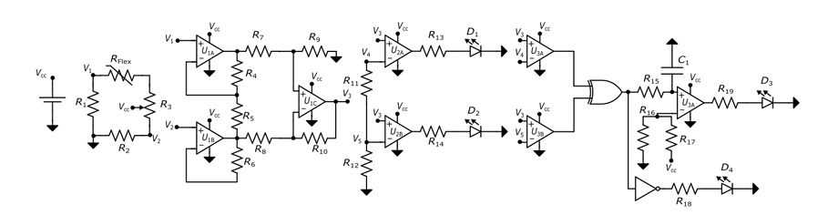

Electronics
Embedded Access Control System
"Designed a micro-controlled security access apparatus incorporating hardware verification registers."
Bill Of Materials
- ATmega32 Microcontroller
- 4x4 Matrix Keypad
- 16x2 LCD Display
- SG90 Servo Motor
- Active Buzzer
- 10kΩ Resistor Pack
- Breadboard & Jump Wires
- 5V Power Supply
- USBasp Programmer
- Decoupling Capacitors
Implementation
This project implements a robust, low-level embedded security system using an ATmega328P microcontroller programmed entirely in AVR assembly language. Designed as a secure digital lock, the system processes user input via a 4x4 matrix keypad, checking a 4-digit password hardcoded into the program memory against user entries in real-time. While the original implementation relied solely on LED configurations for status updates, the system was significantly enhanced by integrating a Liquid Crystal Display (LCD) module. This addition upgraded the user interface from basic light patterns to dynamic, real-time visual feedback, showing character placeholders during password entry and explicitly confirming access states.
On the hardware layer, the system utilizes a highly efficient, interrupt-driven architecture to eliminate CPU-heavy polling loops and software-based delays. Pin change interrupts (PCINT2) handle debounced keypad inputs to maintain optimal responsiveness, while Timer0 manages precise delay generations. Timer1 is configured to generate high-precision, 50Hz Pulse Width Modulation (PWM) signals that dictate servo motor movement, driving physical actuation to 0 degrees (1ms pulse) for the locked state and 90 degrees (1.5ms pulse) to simulate unlocking a mechanism.
To handle security threats, the firmware incorporates a tiered intrusion detection routine that escalates response severity with consecutive failed entries, moving from a 3-second dual-LED flash (red and yellow) to an intensified 5-second flash, and culminating in a persistent, continuous alarm state. System recovery is managed via a physical manual reset button integrated with an internal pull-up resistor on PB0. When pressed, this hardware interrupt forces system reinitialization (clearing all password variables, resetting failure counters, returning the servo to the 0 degrees position, and restoring the red LED indicator) allowing the application to recover seamlessly from alarm states without requiring a full power cycle.
This implementation highlights fundamental principles of low-level hardware orchestration, precise timing, and memory optimization. Future architectural iterations aim to transition the device into a comprehensive two-factor authentication (2FA) framework by pairing the knowledge-based PIN system with possession-based RFID card recognition. Additionally, integrating EEPROM storage will be explored to allow for dynamic, user-customizable credentials rather than relying on a hardcoded password string.
View The Code
AVR Interrupt Handler
PCINT2_vect:
RCALL keypad
CPI R16, '*'
BREQ skip_input
CPI R16, '#'
BREQ skip_input
ST Z, R16
RCALL data_wrt
INC R18
Flex Sensor Angle Detection System
An analog circuit designed to measure and interpret flex sensor resistance changes for real-time angle detection.

Bill Of Materials
- Flex Sensor (SEN-10264, 2.2")
- LM324 Quad Operational Amplifier (Instrumentation Amp)
- LM358 Dual Operational Amplifier (Comparators)
- 100kΩ Potentiometer (Master Reference Calibration)
- Potentiometer (Sensor Arm Aging Compensation)
- Resistor Ladder Network Components
- XOR Logic Gate Integrated Circuit
- NOT Logic Gate Integrated Circuit
- LED Indicators (Red, Green, and Ladder Sequence)
- Breadboard, Jump Wires, and 5V DC Power Supply
Implementation
This project details the design and implementation of an analog flex sensor authentication subsystem structured to operate within a larger cryptographic security application. Utilizing a SEN-10264 flex sensor, the system accurately detects mechanical bend angles between 0 degrees and 100 degrees. The complete system architecture is organized into three unified functional stages: signal acquisition and conditioning, threshold detection via a comparator ladder, and logic verification for visual output control. By monitoring physical flexion sequences, the subsystem determines whether a specific user-input bend angle meets authorization requirements.
The signal acquisition stage employs a Wheatstone bridge configuration to translate variations in sensor resistance into a differential voltage output. Initial sensor characterization established a flat-state resistance of 58 kΩ and an operational range showing highly linear behavior up to 90 degrees. An instrumentation amplifier, constructed using low-power operational amplifiers, provides critical common-mode noise rejection to eliminate human manual artifacts while amplifying the bridge's small differential changes. To protect signal integrity against hardware aging, a calibration potentiometer is embedded directly into the sensor arm of the bridge, enabling manual re-balancing over time.
Threshold detection is achieved using a multi-stage comparator ladder network that translates the conditioned analog signal into discrete digital steps. The circuit utilizes ten voltage comparators configured with non-inverting inputs tied to the amplified sensor voltage, while their inverting inputs connect to a precision resistor divider ladder. This configuration establishes distinct reference thresholds calibrated at 10-degree increments. As the sensor is flexed, each sequential threshold is surpassed, switching the respective comparator output to a high logic state and turning on a corresponding LED to create a real-time, visual bar-graph indication of the bend angle.
To provide secure system authorization, the design integrates a hardware-level logic verification circuit that isolates a targeted code window between 90 degrees and 100 degrees. The reference outputs from the final two comparator stages are fed directly into an XOR logic gate, which outputs a high state exclusively when its inputs differ. This condition isolates the maximum valid flex window where the final stage is reached. The XOR output activates a dedicated green indicator LED through a final comparator stage while simultaneously driving an inverting NOT gate to hold a red error LED active across all other non-matching angular configurations.